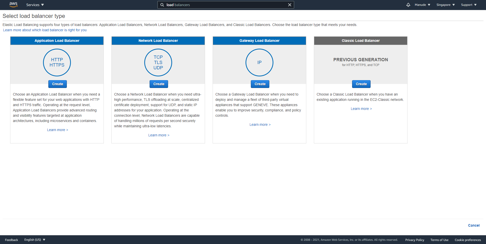
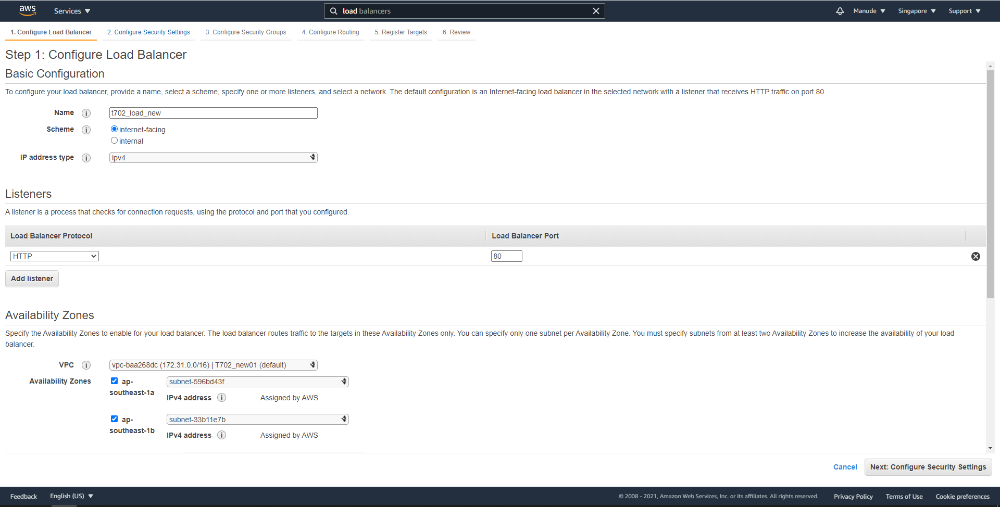
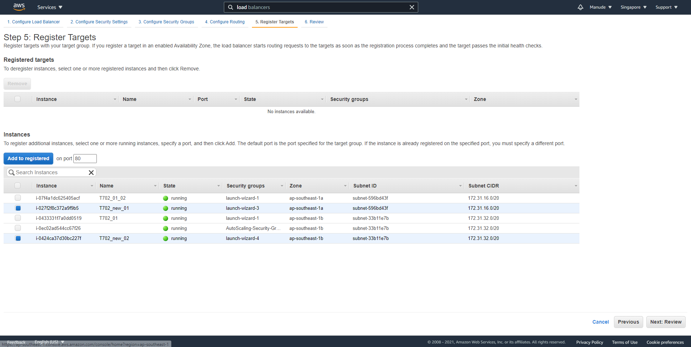
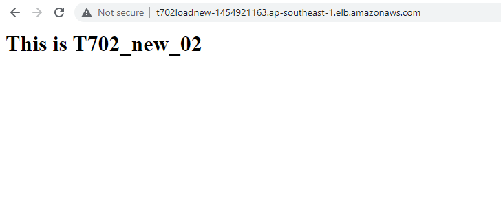
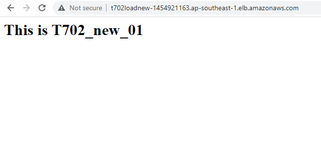

Load Balancing คือ บริการจาก Amazon มาช่วยไม่ให้เครื่อง EC2 รับภาระมากเกินไปโดยการสลับเครื่องไปมา โดยเราจะมาทดลองใช้ ขั้นตอนแรกเราจะทำการสร้าง EC2 จาก image มาก่อนอีก 1 เครื่องแต่จะเปลี่ยน subnet ให้เป็น 1b แทน ต่อมาให้ไปที่ load balancer สำหรับ EC2 กด create ต่อมาเลือกเป็น HTTP ตามรูป
ต่อมาให้ config ใส่ชื่อ, VPC และ subnet ที่ต้องการเสร็จแล้วกด next ตามรูป
กด next ไปจนกระทั่งตั้งชื่อ target group เสร็จแล้วกด next

ต่อมาให้เลือกเครื่องที่ต้องการสลับเลือกเสร็จให้กด Add to registered เสร็จแล้วกด next ตรวจสอบความเรียบร้อยและ กด create
เมื่อสร้างเสร็จเราจะทำการทดลองว่าสลับเครื่องจริงหรือไม่โดย แก้หน้า index.html ของแต่ละเครื่องให้แตกต่างกันและลองเรียกให้ load balancers ดู ซึ่งการทดลองนั้นได้ผลลัพธิ์ตามรูป ในบางครั้งที่ทำการ refresh จะเจอข้อความ T702_new_02 และ T702_new_01
ข้อความของเครื่อง T702_new_02
ข้อความของเครื่อง T702_new_01